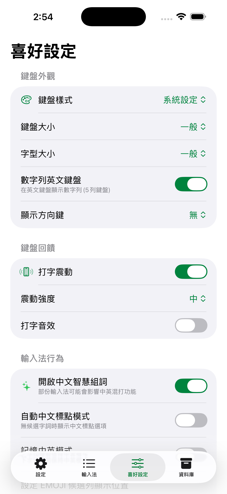

喜好設定
「喜好設定」分頁集中了鍵盤外觀、回饋、輸入行為、簡繁轉換、關聯字學習與英文鍵盤等選項，調整後立即套用，下次叫出鍵盤即生效。請注意，這些調整鍵盤的選項在「喜好設定」分頁，與第一個「設定」分頁的啟用畫面不同。括號內為預設值。
鍵盤外觀
- 鍵盤樣式：淺色、深色、粉紅、科技藍、時尚紫、放鬆綠，或「系統設定」跟隨系統淺色與深色自動切換（預設為系統設定）。
- 鍵盤大小：調整鍵盤的整體縮放，分為特大、大、一般、小、特小（預設為一般）。
- 字型大小：調整候選列的文字大小（預設為一般）。
- 顯示方向鍵：選擇不顯示、顯示在軟鍵盤上方或下方（預設為無）。
- 數字列英文鍵盤：在英文鍵盤頂端加上數字列，成為五列鍵盤，此項為 iPhone 專屬（預設為開啟）。
- 分離鍵盤：將鍵盤左右分割，方便雙手握持打字，可選關閉、開啟或僅橫向開啟，此項為 iPad 專屬（預設為關閉）。
iPhone喜好設定

「喜好設定」分頁集中鍵盤外觀、回饋與輸入行為等選項。
Android喜好設定

Android 喜好設定，選項與 iOS 大致一致。
鍵盤回饋
- 打字震動：每次按鍵都提供震動回饋，此功能在 iPhone 需要「允許完整取用」權限（預設為開啟）。
- 震動強度：調整震動的強弱，分為五段（預設為中）。此設定適用於 iOS 與 Android 12 以下。Android 13 起震動強度由系統統一控制，已移除此設定。
- 打字音效：每次按鍵播放按鍵音效（預設為關閉）。
i
Android 13 以上的按鍵震動若已開啟「打字震動」卻沒有感覺，請先到系統設定開啟觸覺回饋並調高強度，再回到萊姆輸入法確認「打字震動」為開啟。系統觸覺設定位置：Pixel 在「設定 → 聲音與震動 → 震動與觸覺回饋」、Samsung 在「設定 → 聲音和震動 → 震動強度 → 觸覺回饋」、小米在「設定 → 聲音與震動 → 震動強度 → 觸控操作」、OPPO 在「設定 → 聲音與震動 → 震動強度 → 觸控回饋」。
輸入法行為
- 開啟中文智慧組詞：協助在中文模式下混打英文，部分輸入法可能影響此功能（預設為開啟）。
- 自動中文標點模式：沒有候選字詞時，候選列顯示中文標點選項（預設為關閉）。
- 記憶中英模式：切換後保持目前的中英模式，直到你下次手動切換（預設為關閉）。
- EMOJI 候選列顯示位置：設定 Emoji 出現在第幾個候選字之後，也可設為不顯示（預設為第 5 個候選字之後）。
- 建議字顯示數量：設定候選列一次顯示的關聯建議字數量，可選 0、10、20、30、40、50（預設為20）。
- 字根反查設定：進入子畫面，設定打字找不到字時由哪一套輸入法的字根提供反查標注，詳見下方說明。
字根反查設定
字根反查在你打字找不到某個字時，用其他輸入法的字根標注說明，幫你對照學習。進入「字根反查設定」子畫面後，可為每一套輸入法分別指定反查來源，或設為「無」。可設定的輸入法包含自建、倉頡、快倉、倉頡五代、速成、大易、注音、輕鬆、行列、行列 10、筆順五碼、華象直覺與拼音。
i
反查清單只列出已啟用的輸入法子畫面的可選來源會依你目前啟用的輸入法調整，未啟用的輸入法不會出現在清單中。
簡繁轉換
- 中文簡繁體字碼轉換：選擇不轉換、繁體轉簡體或簡體轉繁體，方便跨地區溝通（預設為無）。
關聯字與學習
- 啟用關聯字庫：開關關聯字功能，關閉後候選列不再顯示關聯建議字（預設為開啟）。
- 啟動自建關聯字：依你輸入的文字自動建立關聯字（預設為開啟）。
- 自動學習新詞：從你常用的關聯字學習新詞，加入詞庫（預設為開啟）。
- 啟動選取排序：依你選取的次數重新排序候選清單，常用字往前（預設為開啟）。
英文鍵盤
- 啟用英文字典：使用英文輸入模式時，於候選列顯示英文建議字（預設為開啟）。
- 首字自動大寫：英文模式下，句首字母自動轉為大寫（預設為開啟）。
外接鍵盤（Android 專屬）
以下為 Android 接上實體鍵盤時的相關選項，iOS 沒有對應設定。
- 自動隱藏軟鍵盤：接上實體鍵盤打字時自動隱藏軟鍵盤，使用 S-PEN 者請勿勾選（預設為開啟）。
- 快速切換輸入模式 1：以實體鍵盤的 SHIFT 加 SPACE 切換中英模式（預設為關閉）。
- 快速切換輸入模式 2：以實體鍵盤單按 SHIFT 切換中英模式（預設為開啟）。
- 關閉實體鍵盤選字鍵：停用實體鍵盤上的選字鍵（預設為關閉）。
- 設定選字鍵預選順序：設定實體鍵盤候選字選字鍵的預選順序（預設為第一種）。
- 實體鍵盤啟用英文字典：以實體鍵盤打字時顯示英文建議字（預設為關閉）。
- 啟動實體鍵盤選取排序：以實體鍵盤打字時依選取次數排序候選清單（預設為開啟）。
i
多數選項預設已開啟智慧組詞、關聯字、學習與英文建議字預設都是開啟，多數使用者不需調整即可獲得順手的輸入體驗。